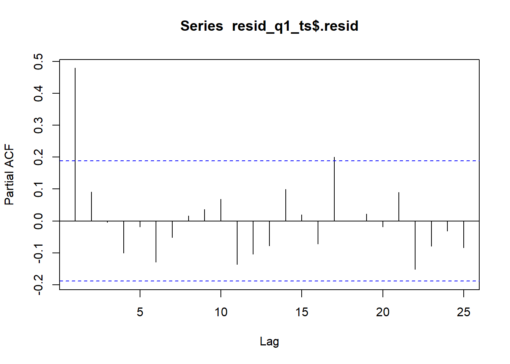

Estimate a harmonic seasonal model using GLS with a log-transformed series
Explain how to use logarithms to linearize certain non-linear trends
Apply non-linear models to time series
Explain when to use non-linear models
Simulate a time series with an exponential trend
Fit a time series model with an exponential trend
Preparation
Read Sections 5.7-5.8
Learning Journal Exchange (10 min)
Review another student’s journal
What would you add to your learning journal after reading another student’s?
What would you recommend the other student add to their learning journal?
Sign the Learning Journal review sheet for your peer
Class Activity: Simulate an Exponential Trend with a Seasonal Component (15 min)
We will simulate code that has a seasonal component and impose an exponential trend.
Figure 1 shows the simulated time series and the time series after the natural logarithm is applied.
Show the code
set.seed(12345)n_years <-9# Number of years to simulaten_months <- n_years *12# Number of monthssigma <- .05# Standard deviation of random termz_t <-rnorm(n = n_months, mean =0, sd = sigma)dates_seq <-seq(floor_date(now(), unit ="year"), length.out=n_months +1, by="-1 month") |>floor_date(unit ="month") |>sort() |>head(n_months)sim_ts <-tibble(t =1:n_months,dates = dates_seq,random =arima.sim(model=list(ar=c(.5,0.2)), n = n_months, sd =0.02),x_t =exp(2+0.015* t +0.03*sin(2* pi *1* t /12) +0.04*cos(2* pi *1* t /12) +0.05*sin(2* pi *2* t /12) +0.03*cos(2* pi *2* t /12) +0.01*sin(2* pi *3* t /12) +0.005*cos(2* pi *3* t /12) + random ) ) |>mutate(cos1 =cos(2* pi *1* t /12),cos2 =cos(2* pi *2* t /12),cos3 =cos(2* pi *3* t /12),cos4 =cos(2* pi *4* t /12),cos5 =cos(2* pi *5* t /12),cos6 =cos(2* pi *6* t /12),sin1 =sin(2* pi *1* t /12),sin2 =sin(2* pi *2* t /12),sin3 =sin(2* pi *3* t /12),sin4 =sin(2* pi *4* t /12),sin5 =sin(2* pi *5* t /12),sin6 =sin(2* pi *6* t /12)) |>mutate(std_t = (t -mean(t)) /sd(t)) |>as_tsibble(index = dates)plot_raw <- sim_ts |>autoplot(.vars = x_t) +labs(x ="Month",y ="x_t",title ="Simulated Time Series" ) +theme_minimal() +theme(plot.title =element_text(hjust =0.5) )plot_log <- sim_ts |>autoplot(.vars =log(x_t)) +labs(x ="Month",y ="log(x_t)",title ="Logarithm of Simulated Time Series" ) +theme_minimal() +theme(plot.title =element_text(hjust =0.5) )plot_raw | plot_log
Figure 1: Time plot of the time series (left) and the natural logarithm of the time series (right)
We will compute the (natural) logarithm of the time series values before fitting any linear models. So, our response variable will be \(\log(x_t)\), rather than \(x_t\).
Even though there is no visual evidence of curvature in the trend for the logarithm of the time series, we will start by fitting a model that allows for a cubic trend. (In practice, we would probably not fit this model. However, there are some things that will occur that are helpful to understand the underlying process.)
Cubic Model
Cubic Model
After taking the (natural) logarithm of \(x_t\), we fit a cubic model to the log-transformed time series.
Note that neither the quadratic nor the cubic terms are statistically significant in this model. We will eliminate the cubic term and fit a model with a quadratic trend.
Quadratic Model
Quadratic Model
We now fit a quadratic model to the log-transformed time series.
Full Quadratic Model
The full model with a quadratic trend is written as:
As we would expect, all the terms are statistically significant. (They were all significant in the previous model, so it is not surprising that they are still significant.)
Reduced Quadratic Trend: Model 3
This model is reduced to include only the Fourier series terms for \(i=1\).
All the terms in this parsimonious model are statistically significant.
Linear Model
Linear Model
Even though the quadratic terms were statistically significant, there is no visual indication that there is a quadratic trend in the time series after taking the logarithm. Hence, we will now fit a linear model to the log-transformed time series. We want to be able to compare the fit of models with a linear trend to the models with quadratic trends.
Full Linear Model
First, we fit a full model with a linear trend. We can express this model as:
We reduce the model to see if a more parsimonious model will suffice. This model contains a linear trend and the Fourier series terms associated with \(i=1\) and \(i=2\).
Both of these models have very low AIC, AICc, and BIC values.
We will take a deeper look at the residuals of these two models to assess if there is evidence of autocorrelation in the random terms. We compute the autocorrelation function and the partial autocorrelation function of the residuals for both. If there is evidence of autocorrelation, we will use the GLS algorithm to fit the models, since it will take into account the autocorrelation in the terms.
Autocorrelation of the Random Component
Investigating Autocorrelation of the Random Component
Recall that if there is autocorrelation in the random component, the standard error of the parameter estimates tends to be underestimated. We can account for this autocorrelation using Generalized Least Squares, GLS, if needed.
Reduced Quadratic Trend: Model 1
Figure 2 illustrates the ACF of the reduced model 1 with quadratic trend.
Figure 2: ACF of reduced model 1 with a quadratic trend
Notice that the residual correlogram indicates a positive autocorrelation in the values. This suggests that the standard errors of the regression coefficients will be underestimated, which means that some predictors can appear to be statistically significant when they are not.
Figure 3 illustrates the PACF of the reduced model 1 with quadratic trend.
Show the code
pacf(resid_q1_ts$.resid, plot=TRUE, lag.max =25)

Figure 3: PACF of reduced model 1 with a quadratic trend
Only the first partial autocorrelation is statistically significant. The partial autocorrelation plot indicates that an \(AR(1)\) model could adequately model the random component of the logarithm of the time series. Recall that in Chapter 5, Lesson 1, we fitted a linear regression model using the value of the partial autocorrelation function for \(k=1\). This helps account for the autocorrelation in the residuals.
The first few partial autocorrelation values are:
Show the code
pacf(resid_q1_ts$.resid, plot=FALSE, lag.max =10)
Partial autocorrelations of series 'resid_q1_ts$.resid', by lag
1 2 3 4 5 6 7 8 9 10
0.479 0.091 -0.004 -0.101 -0.018 -0.129 -0.051 0.016 0.037 0.069
The partial autocorrelation when \(k=1\) is approximately 0.479. We will use this value as we recompute the regression coefficients.
The quadratic term is not statistically significant in this model! After accounting for the autocorrelation in the random component, the quadratic component of the trend is not statistically significant. This is a great example of an instance where ordinary linear regression leads to errant results.
We now consider the reduced model 1 where the trend is linear.
Reduced Linear Trend: Model 1
Figure 4 illustrates the ACF of the reduced model 1 with linear trend.
Figure 6 illustrates the original time series (in black) and the fitted model (in blue). For reference, a dotted line illustrating the simple least squares line is plotted on this figure for reference. It helps highlight the exponential shape of the trend.
Show the code
forecast_df <- reduced_linear_lm1 |>forecast(sim_ts) |>as_tibble() |> dplyr::select(std_t, .mean) |>rename(pred = .mean)sim_ts |>left_join(forecast_df, by ="std_t") |>as_tsibble(index = dates) |>autoplot(.vars = x_t) +geom_smooth(method ="lm", formula ='y ~ x', se =FALSE, color ="#E69F00", linewidth =0.5, linetype ="dotted") +geom_line(aes(y = pred), color ="#56B4E9", alpha =0.75) +labs(x ="Month",y ="Simulated Time Series",title ="Time Plot of Simulated Time Series with an Exponential Trend",subtitle ="Predicted values based on the full cubic model are given in blue" ) +theme_minimal() +theme(plot.title =element_text(hjust =0.5),plot.subtitle =element_text(hjust =0.5) )
Figure 6: Time plot of the time series (left) and the natural logarithm of the time series (right)
Comparison of the Fitted Coefficients to the Simulation Parameters
Comparison of Model Coefficients
Note that the mean of the \(x_t\) values is \(\bar x_t = 18.699\), and the standard deviation is \(s_t = 8.691\).
Notice how well this matches the original model used to simulate the data.
\[\begin{align*}
x_t &= e^{
2 + 0.015 t +
0.03 ~ \sin \left( \frac{2 \pi \cdot 1 t }{ 12 } \right) + 0.04 ~ \cos \left( \frac{2 \pi \cdot 1 t }{ 12 } \right) +
0.05 ~ \sin \left( \frac{2 \pi \cdot 2 t }{ 12 } \right) + 0.03 ~ \cos \left( \frac{2 \pi \cdot 2 t }{ 12 } \right) +
0.01 ~ \sin \left( \frac{2 \pi \cdot 3 t }{ 12 } \right) + 0.005 ~ \cos \left( \frac{2 \pi \cdot 3 t }{ 12 } \right) +
z_t
}
\end{align*}\] where \(z_t = 0.5 z_{t-1} + 0.2 z_{t-2} + w_t\) and \(w_t\) is a white noise process with standard deviation of 0.02.
Small-Group Activity: Retail Sales (20 min)
Figure 7 gives the total sales (in millions of U.S. dollars) for the category “all other general merchandise stores (45299).”
Show the code
# Read in retail sales data for "all other general merchandise stores"retail_ts <- rio::import("https://byuistats.github.io/timeseries/data/retail_by_business_type.parquet") |>filter(naics ==45299) |>as_tsibble(index = month)retail_ts |>autoplot(.vars = sales_millions) +labs(x ="Month",y ="Sales (Millions of U.S. Dollars)",title =paste0(retail_ts$business[1], " (", retail_ts$naics[1], ")") ) +theme_minimal() +theme(plot.title =element_text(hjust =0.5))
Figure 7: Time plot of the total monthly retail sales for all other general merchandise stores (45299)
Check Your Understanding
Use Figure 7 to explain the following questions to a partner.
What is the shape of the trend of this time series?
Which decomposition would be more appropriate: additive or multiplicative? Justify your answer.
Apply the appropriate transformation to the time series.
Fit models utilizing the Fourier terms for seasonal components.
Determine the “best” model for these data. Justify your decision.
Check for autocorrelation in the random terms.
Use GLS to fit the model, if there is evidence of autocorrelation in the random component.
Refine your choice of the “best” model, if necessary. Justify your actions.
Plot the fitted values and the time series on the same figure.
Class Activity: Simulated Non-Linear Series (10 min)
In Section 5.8 of the textbook, we are introduced to the possibility that a time series could have an exponential trend but also exhibit negative values. In this case, the logarithm of the negative values is not defined, so we need a different approach to fit the model.